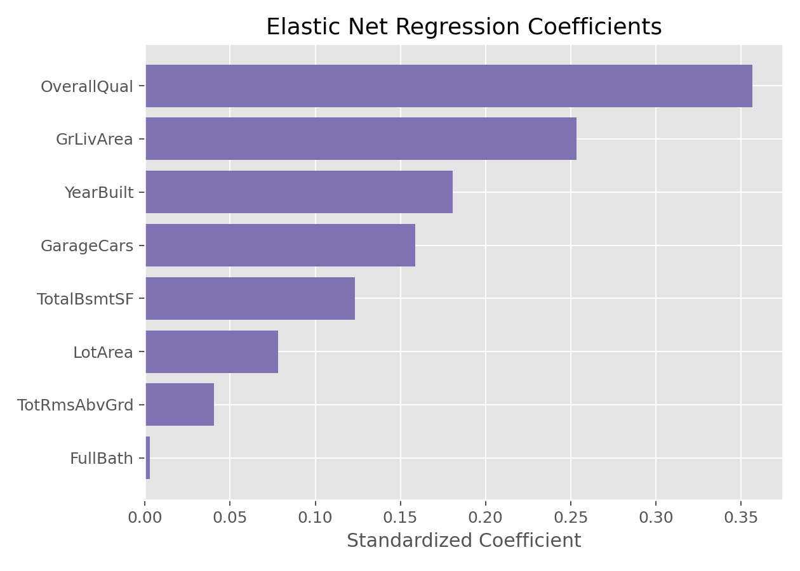

弹性网络回归
弹性网络回归（Elastic Net Regression）
方法概览
1.1 一句话本质
弹性网络把 Lasso 的「会筛变量」和 Ridge 的「对相关变量更稳定」合在一起，在稀疏性和稳定性之间调档。
1.2 定义
弹性网络回归是在回归损失中同时加入 L1 和 L2 正则化的模型。它既可以把部分变量系数压到 0，也能通过 L2 部分缓解 Lasso 在高度相关变量组中选择不稳定的问题。
1.3 它主要解决什么问题
- 研究问题：变量很多且彼此相关时，如何既筛变量，又避免 Lasso 随机挑一个相关变量。
- 适用任务：高维连续结局预测、相关特征组筛选、组学/影像组学建模。
- 常见医学场景：多个相关生物标志物、影像纹理特征、组学特征共同预测连续风险评分或治疗反应。
1.4 直觉与类比
如果 Ridge 像橡皮筋、Lasso 像闸门，Elastic Net 就像带闸门的橡皮筋：弱变量仍会被关掉，但对一组彼此相似的变量，它不会像纯 Lasso 那样非得只留下一个，而是可以让一组相关变量共同分摊贡献。
核心思想与原理
2.1 它到底在解决什么根本困难
Lasso 能筛变量，但在高度相关的一组变量中常常只保留一个，且保留谁可能随样本扰动而变。Ridge 很稳定，却不会筛变量。Elastic Net 解决的是这两者之间的张力：医学高维数据常既需要变量压缩，又希望相关生物指标或影像特征不要被过度随机地二选一。
2.2 关键洞察
Elastic Net 的关键洞察是把惩罚拆成两部分：L1 负责制造稀疏性，L2 负责平滑和稳定相关变量组。通过 l1_ratio 或 $\rho$，研究者可以选择更像 Lasso，还是更像 Ridge。
2.3 与朴素/相邻做法的对比
- 相对 Lasso回归（Lasso Regression）：Elastic Net 对相关变量组更友好，选择更稳定。
- 相对 Ridge回归（Ridge Regression）：Elastic Net 可以产生精确 0，模型更简洁。
- 相对手动筛变量：Elastic Net 在一个统一的优化目标中同时完成拟合、收缩和筛选。
数学形式
3.1 核心公式
一种常用写法为：
$$ \hat{\boldsymbol{\beta}} = \operatorname*{arg\,min}_{\boldsymbol{\beta}} \left[ \sum_{i=1}^{n}(y_i-\mathbf x_i^\top\boldsymbol{\beta})^2 +\lambda\left\{ \rho\sum_{j=1}^{p}|\beta_j| +\frac{1-\rho}{2}\sum_{j=1}^{p}\beta_j^2 \right\} \right] $$
其中 $0\le \rho\le 1$。$\rho=1$ 时是 Lasso，$\rho=0$ 时是 Ridge。
在正交特征下，Elastic Net 近似为：
$$ \hat\beta_j= \frac{\operatorname{sign}(z_j)\max(|z_j|-\lambda\rho,0)} {1+\lambda(1-\rho)} $$
这个式子在说：先像 Lasso 一样扣掉一个阈值 $\lambda\rho$，再像 Ridge 一样除以一个收缩因子。
3.2 推导脉络
- 从 Lasso 的 L1 惩罚出发，它提供稀疏性，但相关变量组不稳定。
- 加入 Ridge 的 L2 惩罚，让相关变量的系数更倾向于一起收缩。
- $\rho$ 控制 L1 与 L2 的比例；$\lambda$ 控制总体惩罚强度。
- 实际软件通常用坐标下降和交叉验证，在一组 $\lambda$ 与 $\rho$ 候选值中选择。
3.3 参数与统计量含义
- $\lambda$：总体正则化强度，越大模型越简单。
- $\rho$ /
l1_ratio：L1 占比，越接近 1 越像 Lasso，越接近 0 越像 Ridge。 - 非零系数：被模型保留的变量。
- 相关变量组：彼此强相关的一组特征，Elastic Net 倾向于比 Lasso 更稳定地处理它们。
- 交叉验证误差：选择 $\lambda$ 和 $\rho$ 的核心依据。
3.4 关键假设(含违反后果)
| 假设 | 含义 | 违反后会怎样 | 如何粗查 |
|---|---|---|---|
| 线性可加近似 | 特征线性组合能解释结局均值 | 预测偏差、筛选错位 | 残差图、非线性扩展 |
| 特征尺度可比 | L1/L2 惩罚公平作用 | 变量选择受量纲影响 | 标准化 |
| 训练验证独立 | 调参不使用测试信息 | 性能虚高 | pipeline、嵌套交叉验证 |
| 相关结构可被惩罚处理 | 相关变量组适合成组收缩 | 仍可能选择不稳定 | 相关矩阵、稳定性选择 |
| 目标是预测/筛选而非因果 | 非零系数不等于因果变量 | 过度解释 | 外部验证、因果设计另行处理 |
手把手算例
继续使用 Ridge 和 Lasso 卡中的同一组正交特征：
$$ \mathbf X^\top\mathbf X=\mathbf I,\qquad \mathbf X^\top\mathbf y=(3,\ 0.8,\ 0.3) $$
取 $\lambda=1$、$\rho=0.5$，也就是 L1 和 L2 各占一部分。
Step 1：计算 L1 阈值和 L2 收缩因子。
$$ \lambda\rho=1\times 0.5=0.5 $$
$$ 1+\lambda(1-\rho)=1+1\times 0.5=1.5 $$
Step 2：逐个变量先软阈值，再收缩。
- $x1$：先扣阈值 $3-0.5=2.5$，再除以 1.5，得 $\hat\beta_1=1.67$。
- $x2$：先扣阈值 $0.8-0.5=0.3$，再除以 1.5，得 $\hat\beta_2=0.20$。
- $x3$：$0.3-0.5$ 不足 0，得 $\hat\beta_3=0$。
所以：
$$ \hat{\boldsymbol\beta}_{\mathrm{EN}}=(1.67,\ 0.20,\ 0) $$
Step 3：和 Ridge/Lasso 对照。
- Ridge：$(1.5,\ 0.4,\ 0.15)$，三个变量都保留。
- Lasso：$(2,\ 0,\ 0)$，只保留最强变量。
- Elastic Net：$(1.67,\ 0.20,\ 0)$，保留强变量和中等变量，删除最弱变量。
结论： Elastic Net 的行为介于 Ridge 和 Lasso 之间：它既能清零，又不像 Lasso 那样激进。对于一组相关且中等强度的医学特征，这种折中经常更稳。
数据形式与输入输出
5.1 适合的数据形式
- 自变量类型：连续变量、哑变量、组学特征、影像特征、标准化临床指标。
- 因变量类型：连续型；可扩展为二分类、计数或生存结局的正则化模型。
- 数据结构：宽表数据，常见于 $p$ 较大、变量相关性明显的任务。
- 是否适合高维数据：非常适合。
- 是否适合缺失较多数据：需先处理缺失。
- 是否适合删失数据：普通 Elastic Net 不适合；需正则化 Cox。
- 是否适合重复测量数据：不直接适合；需纵向扩展或先明确独立分析单位。
5.2 示例表格
| OverallQual | GrLivArea | GarageCars | TotalBsmtSF | YearBuilt | SalePrice |
|---|---|---|---|---|---|
| 7 | 1710 | 2 | 856 | 2003 | 208500 |
| 6 | 1262 | 2 | 1262 | 1976 | 181500 |
| 7 | 1786 | 2 | 920 | 2001 | 223500 |
| 7 | 1717 | 3 | 756 | 1915 | 140000 |
| 8 | 2198 | 3 | 1145 | 2000 | 250000 |
5.3 输入与产出
输入
- 输入数据：连续结局和候选特征矩阵。
- 关键变量：$\lambda$、$\rho$ 或
alpha、l1_ratio。 - 需要预处理的内容：缺失处理、分类变量编码、标准化、训练/验证划分。
产出
- 模型对象/统计结果：最佳 $\lambda$、最佳 $\rho$、非零系数。
- 参数估计：兼顾稀疏性和稳定性的收缩系数。
- 预测结果：连续型预测值。
- 不确定性指标：交叉验证误差、测试集误差、变量入选稳定性。
适用场景
- 适合：高维、变量相关性强、希望稳定筛选一组变量。
- 不适合：变量很少且共线性不明显；只想保留全部变量；需要无偏因果估计。
- 使用前需要特别检查的点：标准化、$\lambda$ 与 $\rho$ 网格、相关变量组、外部验证性能。
实现
常用包:
scikit-learn
from sklearn.linear_model import ElasticNetCV
from sklearn.pipeline import make_pipeline
from sklearn.preprocessing import StandardScaler
model = make_pipeline(
StandardScaler(),
ElasticNetCV(
l1_ratio=[0.1, 0.3, 0.5, 0.7, 0.9],
cv=5,
max_iter=20000,
random_state=1
)
)
model.fit(X_train, y_train)
enet = model.named_steps["elasticnetcv"]
print(enet.alpha_, enet.l1_ratio_)
print(X_train.columns[enet.coef_ != 0].tolist())
常用包:
glmnet
library(glmnet)
x <- model.matrix(SalePrice ~ . - 1, data = train_df)
y <- train_df$SalePrice
grid <- seq(0.1, 0.9, by = 0.2)
fits <- lapply(grid, function(a) cv.glmnet(x, y, alpha = a, standardize = TRUE))
cv_min <- sapply(fits, function(f) min(f$cvm))
best <- which.min(cv_min)
coef(fits[[best]], s = "lambda.min")
grid[best] # 最优 alpha，即 L1 占比
结果如何解读
- 核心结果看什么：最佳 $\rho$、最佳 $\lambda$、非零变量、交叉验证和外部验证性能。
- 每个主要参数如何解读：$\rho$ 越高，模型越稀疏；$\rho$ 越低，越强调相关变量组的稳定收缩。
- 临床或医学意义如何表达：非零变量是预测模型选择出的候选特征集合，需要结合领域知识和外部验证解读。
- 常见误读：Elastic Net 不是自动发现病因；它发现的是在当前建模目标下有预测贡献的变量组合。
假设诊断与稳健性
- 超参数稳健性：比较不同 $\rho$ 下的误差曲线和变量集合。
- 变量选择稳定性：bootstrap 或重复交叉验证，统计变量入选频率。
- 相关变量组：检查是否成组保留了高度相关特征，或是否仍不稳定。
- 外部验证：在独立队列中验证预测误差和入选变量方向。
- 数据泄漏：标准化、调参、筛选必须放在训练流程内部。
推荐可视化
- 二维调参热图：横轴 $\lambda$，纵轴 $\rho$，颜色为交叉验证误差。
- 系数路径图：展示不同惩罚下变量进入或退出模型。
- 非零系数条形图：展示最终模型保留变量。
- 稳定性选择图：展示每个变量在重复重采样中的入选比例。
10.1 图像示例
下图展示 Elastic Net 回归在房价建模中的系数分布，体现了它在稀疏性和稳定性之间的折中。

优势、局限与常见坑
优势
- 兼顾变量选择和系数稳定性。
- 对高度相关特征组比 Lasso 更友好。
- 很适合组学、影像组学等中高维医学预测。
局限
- 超参数比 Ridge 或 Lasso 更多，调参更复杂。
- 结果仍有收缩偏倚，不适合直接做传统推断。
- 变量选择结果仍可能随样本变化，需要稳定性评估。
常见坑
- 只调 $\lambda$，不调或不报告 $\rho$。
- 不标准化就比较系数或做筛选。
- 把非零变量当成严格因果变量。
- 没有外部验证就宣称筛选出了可靠生物标志物。
与相近方法的区别
- 和 Ridge回归（Ridge Regression） 的区别：Elastic Net 可以清零变量，Ridge 不会。
- 和 Lasso回归（Lasso Regression） 的区别：Elastic Net 加入 L2 惩罚，对相关变量组更稳定。
- 和逐步回归的区别：Elastic Net 是连续正则化优化，不是逐步增删变量。
- 如何选择：变量相关性强且仍想筛选变量时，用 Elastic Net 往往比纯 Lasso 更稳。
医学研究中的典型应用
- 多组学特征筛选和连续表型预测。
- 影像组学特征高度相关时的稳定变量压缩。
- 多个相关危险因素联合预测住院天数、费用、评分或生理指标。
- 临床预测模型开发中，在候选变量很多时作为嵌入式筛选步骤。
关键术语
- 弹性网络（Elastic Net）：同时使用 L1 和 L2 正则化的回归方法。
- 混合惩罚（Mixed Penalty）：把两类惩罚按比例加权组合。
- L1 占比（L1 Ratio）：控制模型更像 Lasso 还是更像 Ridge 的参数。
- 相关变量组（Correlated Feature Group）：彼此高度相关、携带相似信息的一组变量。
- 成组效应（Grouping Effect）：相关变量倾向于被共同保留或共同收缩的现象。
- 交叉验证网格（Cross-validation Grid）：用于搜索 $\lambda$ 和 $\rho$ 的候选组合。
- 收缩偏倚（Shrinkage Bias）：惩罚项使系数向 0 偏移带来的估计偏倚。
相关方法
参考资料
- Zou H, Hastie T. Regularization and variable selection via the elastic net. J R Stat Soc Series B. 2005;67(2):301-320.
- Hastie T, Tibshirani R, Friedman J. The Elements of Statistical Learning. 2nd ed. Springer; 2009.
- James G, Witten D, Hastie T, Tibshirani R. An Introduction to Statistical Learning. 2nd ed. Springer; 2021.
- Friedman J, Hastie T, Tibshirani R. Regularization paths for generalized linear models via coordinate descent. J Stat Softw. 2010;33(1):1-22.